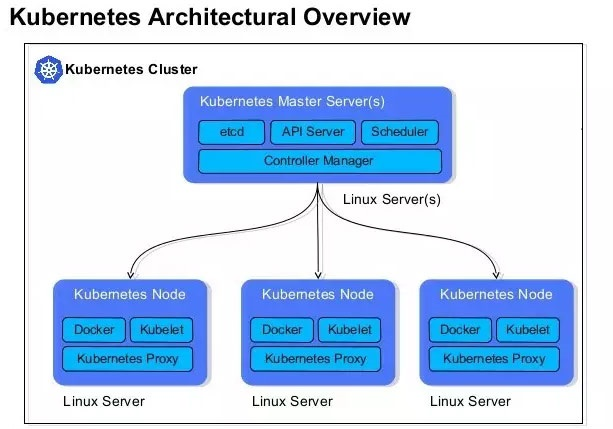
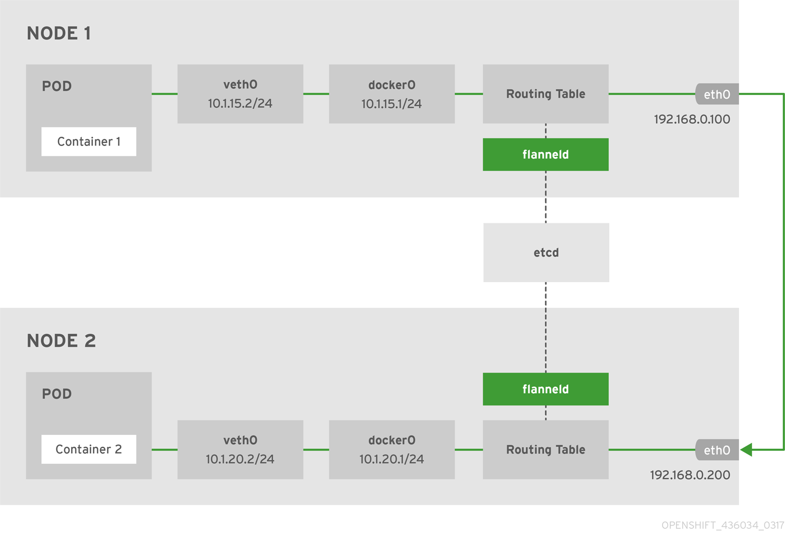

k8s 相关
一、相关概念


核心思想
- 资源注册
- 发现框架
Master节点
API Server
- 集群控制的唯一入口，是提供Kubernets集群控制RESTful API的核心组件
- 集群内各个组件之间数据交互和通信的中枢
- 提供集群控制的安全机制（身份认证、授权以及admission control）
Scheduler
- 通过API Server的Watch接口监听新建Pod副本信息，并通过调度算法为该Pod选择一个最合适的Node
- 支持自定义调度算法provider
- 默认调度算法内置预选策略和优选策略，决策考量资源需求、服务质量、软硬件约束、亲缘性、数据局部性等指标参数
ControllerManager
- 集群内各种资源controller的核心管理者
- 针对每一种具体的资源，都有相应的Controller
- 保证其下管理的每个Controller所对应的的资源始终处于“期望状态”
Etcd
- Kubernetes集群的主数据库，存储着所有资源对象以及状态
- 默认与Master组件部署在一个Node上
- Etcd的数据变更都是通过API Server进行
Node节点
kubernets集群中真正的工作负载节点
Kubelet
- 位于集群中每个Node上的非容器形式的服务进程组件，Master和Node之间的桥梁
- 处理Master下发到本Node上的Pod创建、启停等任务管理任务；向API Server注册Node信息
- 监控本Node上容器和节点资源情况，并定期向Master汇报节点资源占用情况
Kube-proxy
- Service抽象概念的实现，将到Service的请求按策略（负载均衡）算法分发到后端Pod（Endpoint）上
- 默认使用iptables mode实现
- 支持nodeport模式，实现从外部访问集群内的service
k8s核心组件
| 组件名 | 说明 |
|---|---|
| etcd | 保存整个集群的状态 |
| apiserver | 提供资源操作的唯一入口，并提供认证、授权、访问控制、api注册和发现等机制 |
| controller manager | 负责维护集群状态，比如故障检测、自动扩展、滚动更新等 |
| scheduer | 负责资源的调度，按照预定的调度策略将pod调度到相应的机器上 |
| kubelet | 负责维护容器的生命周期，同时负责volume（CVI）和网络（CNI）的管理，主要负责监视指派到它所在node上的pod，包括增删改监控等 |
| container runtime | 负责镜像管理以及pod和容器的真正运行（CRI） |
| kube-proxy | 负责为service提供cluster内部的服务发现和负载均衡，负责为pod对象提供代理 |
其他组件
| 组件名称 | 说明 |
|---|---|
| kube-dns | 负责为整个集群提供DNS服务 |
| ingress controller | 为服务提供外网入口 |
| heapster | 提供资源监控 |
| dashboard | 提供GUI |
| federation | 提供跨可用区的集群 |
| fluentd-elasticsearch | 提供集群日志采集、存储与查询 |
重要概念
Pod
运行于Node节点上，若干相关容器的组合。Pod内包含的容器运行在同一宿主机上，使用相同的网络命名空间、IP地址和端口。Pod是Kubernets最基本的部署调度单元。每个Pod可以由一个或多个业务容器和一个根容器（Pause容器）组成。一个Pod表示某个应用的一个实例。
Pod只提供容器的运行环境并保持容器的运行状态，重启容器不会造成Pod重启。
Pod不会自愈。如果Pod运行的Node故障，或者是调度器本身故障，这个Pod就会被删除。同样的，如果Pod所在Node缺少资源或者Pod处于维护状态，Pod也会被驱逐。Kubernetes使用更高级的称为Controller的抽象层，来管理Pod实例。虽然可以直接使用Pod，但是在Kubernetes中通常是使用Controller来管理Pod的。
Pod中共享的环境包括Linux的namespace、cgroup和其他可能的隔绝环境。
Node
Node节点是Kubernetes集群中的工作节点，Node上的负载由Master节点分配，工作负载主要是运行容器应用。
ReplicaSet
是Pod副本的抽象，用于解决Pod的扩容和伸缩
Deployment
Deployment表示部署，在内部使用ReplicaSet实现。可以通过Deployment来生成相应的ReplicaSet完成Pod副本的创建。
Replication Controller
Replication Controller用来管理Pod的副本，保证集群中存在指定数量的Pod副本。集群中副本的数量大于指定的数量，则会停止指定数量之外的多余容器数量，反之，则会启动少于指定数量个数的容器，保证数量不变。Replication Controller是实现弹性伸缩、动态扩容和滚动升级的核心。
Service
Service定义了Pod的逻辑集合和访问该集合的策略，是真实服务的抽象。Service提供了一个统一的服务访问入口以及服务代理和发现机制，关联多个相同Label的Pod，用户不需要了解后台Pod是如何运行。
Label
Kubernets中任意API对象都是通过Label进行标识，Label的实质是一系列的Key/Value键值对。其中Key和Value由用户自己指定。Label可以附加在各种资源对象上，如Node、Pod、Service、RC等，一个资源对象可以定义任意数量的Label，同一个Label也可以被添加到任意数量的资源对象上去。Label是Replication Controller和Service运行的基础，两者通过Label来进行关联Node上运行的Pod。
kube-dns
负责为整个集群提供DNS服务
Ingress Conroller
为服务提供外网入口
Heapster
提供资源监控
Dashboard
提供GUI
RBAC
基于角色的访问控制
kubernetes有一个很基本的特性就是它的所有资源对象都是模型化的 API 对象，允许执行 CRUD(Create、Read、Update、Delete)操作(也就是我们常说的增、删、改、查操作)，比如下面的这下资源：
- Pods
- ConfigMaps
- Deployments
- Nodes
- Secrets
- Namespaces
上面这些资源对象的可能存在的操作有：
- create
- get
- delete
- list
- update
- edit
- watch
- exec
二、使用Minikube安装（适合单机部署开发）
安装kubenets版本v1.15
1、查看系统是否支持虚拟化
egrep --color 'vmx|svm' /proc/cpuinfo
2、关闭和禁用防火墙
systemctl stop firewalld
systemctl disable firewalld
setenforce 0
sed -i "s/^SELINUX=enforcing/SELINUX=disabled/g" /etc/selinux/config
3、禁用交换分区
swapoff -a
sed -i 's/.*swap.*/#&/' /etc/fstab
4、安装minikube
curl -Lo minikube https://storage.googleapis.com/minikube/releases/latest/minikube-linux-amd64 && chmod +x minikube && mv minikube /usr/local/bin/
curl -Lo minikube https://storage.googleapis.com/minikube/releases/latest/minikube-linux-amd64 && chmod +x minikube
install minikube /usr/local/bin
5、安装docker
curl -fsSL https://get.docker.com | bash -s docker --mirror Aliyun
systemctl start docker
systemctl enable docker
6、安装kubelet
cat <<EOF > /etc/yum.repos.d/kubernetes.repo
[kubernetes]
name=Kubernetes
baseurl=https://mirrors.aliyun.com/kubernetes/yum/repos/kubernetes-el7-x86_64/
enabled=1
gpgcheck=1
repo_gpgcheck=1
gpgkey=https://mirrors.aliyun.com/kubernetes/yum/doc/yum-key.gpg https://mirrors.aliyun.com/kubernetes/yum/doc/rpm-package-key.gpg
EOF
yum -y makecache fast
yum install -y kubectl
systemctl start kubelet
systemctl enable kubelet
7、不依赖虚拟机模拟启动
执行下面命令会自动安装kubeadm、kubelet两个软件
在拉取镜像时会访问https://k8s.gcr.io/v2/失败，需要翻墙
--image-repository 使用我同步到aliyun仓库的k8s镜像
minikube start --vm-driver=none --kubernetes-version v1.15.0 -v 0 --image-repository registry.cn-hangzhou.aliyuncs.com/hlyani
--registry-mirror=https://registry.docker-cn.com
* minikube v1.2.0 on linux (amd64)
* using image repository registry.cn-hangzhou.aliyuncs.com/ates-k8s
* Creating none VM (CPUs=2, Memory=2048MB, Disk=20000MB) ...
* Configuring environment for Kubernetes v1.15.0 on Docker 18.09.6
* Downloading kubeadm v1.15.0
* Downloading kubelet v1.15.0
* Pulling images ...
* Launching Kubernetes ...
* Configuring local host environment ...
! The 'none' driver provides limited isolation and may reduce system security and reliability.
! For more information, see:
- https://github.com/kubernetes/minikube/blob/master/docs/vmdriver-none.md
! kubectl and minikube configuration will be stored in /root
! To use kubectl or minikube commands as your own user, you may
! need to relocate them. For example, to overwrite your own settings:
- sudo mv /root/.kube /root/.minikube $HOME
- sudo chown -R $USER $HOME/.kube $HOME/.minikube
* This can also be done automatically by setting the env var CHANGE_MINIKUBE_NONE_USER=true
* Verifying: apiserver proxy etcd scheduler controller dns
* Done! kubectl is now configured to use "minikube"
* For best results, install kubectl: https://kubernetes.io/docs/tasks/tools/install-kubectl/
8、执行下面命令先拉去镜像（可选）
kubeadm config images list
kubeadm config images pull --kubernetes-version v1.15.0 --image-repository registry.cn-hangzhou.aliyuncs.com/hlyani
docker images
REPOSITORY TAG IMAGE ID CREATED SIZE
registry.cn-hangzhou.aliyuncs.com/hlyani/kube-proxy v1.15.0 d235b23c3570 8 days ago 82.4MB
registry.cn-hangzhou.aliyuncs.com/hlyani/kube-apiserver v1.15.0 201c7a840312 8 days ago 207MB
registry.cn-hangzhou.aliyuncs.com/hlyani/kube-scheduler v1.15.0 2d3813851e87 8 days ago 81.1MB
registry.cn-hangzhou.aliyuncs.com/hlyani/kube-controller-manager v1.15.0 8328bb49b652 8 days ago 159MB
registry.cn-hangzhou.aliyuncs.com/hlyani/coredns 1.3.1 eb516548c180 5 months ago 40.3MB
registry.cn-hangzhou.aliyuncs.com/hlyani/etcd 3.3.10 2c4adeb21b4f 6 months ago 258MB
registry.cn-hangzhou.aliyuncs.com/hlyani/pause 3.1 da86e6ba6ca1 18 months ago 742kB
9、查看init-defaults
kubeadm config print init-defaults
10、清除部署（可选）
minikube delete
[preflight] Running pre-flight checks
[preflight] Running pre-flight checks
[reset] Stopping the kubelet service
[reset] Unmounting mounted directories in "/var/lib/kubelet"
[reset] Deleting contents of config directories: [/etc/kubernetes/manifests /etc/kubernetes/pki]
[reset] Deleting files: [/etc/kubernetes/admin.conf /etc/kubernetes/kubelet.conf /etc/kubernetes/bootstrap-kubelet.conf /etc/kubernetes/controller-manager.conf /etc/kubernetes/scheduler.conf]
[reset] Deleting contents of stateful directories: [/var/lib/kubelet /etc/cni/net.d /var/lib/dockershim /var/run/kubernetes]
The reset process does not reset or clean up iptables rules or IPVS tables.
If you wish to reset iptables, you must do so manually.
For example:
iptables -F && iptables -t nat -F && iptables -t mangle -F && iptables -X
If your cluster was setup to utilize IPVS, run ipvsadm --clear (or similar)
to reset your system's IPVS tables.
The reset process does not clean your kubeconfig files and you must remove them manually.
Please, check the contents of the $HOME/.kube/config file.
11、让kubectl使用minikube的配置文件
kubectl config use-context minikube
12、dashboard
minikube dashboard --url
13、测试，部署nginx
kubectl run hello --image=nginx --port=80
kubectl expose deployment hello --type=NodePort
#kubectl expose deployment hello --port=80 --type=LoadBalancer
kubectl get pod
curl $(minikube service hello --url)
14、其他
minikube有一个强大的子命令叫做addons，它可以在kubernetes中安装插件（addon）。这里所说的插件，就是部署在Kubernetes中的Deploymen或者Daemonset。
Kubernetes在设计上有一个特别有意思的地方，就是它的很多扩展功能，甚至于基础功能也可以部署在Kubernetes中，比如网络插件、DNS插件等。安装这些插件的时候， 就是用kubectl命令，直接在kubernetes中部署。
minikube addons list
minikube addons disable XXX
minikube addons enable XXX
三、使用kubeadm安装
1、安装kubeadm, kubelet 和 kubect
kubeadm: the command to bootstrap the cluster.kubelet: the component that runs on all of the machines in your cluster and does things like starting pods and containers.kubectl: the command line util to talk to your cluster.
cat <<EOF > /etc/yum.repos.d/kubernetes.repo
[kubernetes]
name=Kubernetes
baseurl=https://mirrors.aliyun.com/kubernetes/yum/repos/kubernetes-el7-x86_64/
enabled=1
gpgcheck=1
repo_gpgcheck=1
gpgkey=https://mirrors.aliyun.com/kubernetes/yum/doc/yum-key.gpg https://mirrors.aliyun.com/kubernetes/yum/doc/rpm-package-key.gpg
EOF
yum -y makecache fast
yum install -y kubectl kubeadm kubelet
systemctl start kubelet
systemctl enable kubelet
2、由于绕过了iptables而导致路由错误的问题。
cat <<EOF > /etc/sysctl.d/k8s.conf
net.bridge.bridge-nf-call-ip6tables = 1
net.bridge.bridge-nf-call-iptables = 1
EOF
sysctl --system
3、禁用交换分区和禁用防火墙
swapoff -a
sed -i 's/.*swap.*/#&/' /etc/fstab
setenforce 0
sed -i 's/^SELINUX=enforcing$/SELINUX=permissive/' /etc/selinux/config
systemctl stop firewalld
systemctl disable firewalld
4、安装docker
curl -fsSL https://get.docker.com | bash -s docker --mirror Aliyun
systemctl start docker
systemctl enable docker
5、使用kubeadm开始安装
apiVersion: kubeadm.k8s.io/v1alpha1
kind: MasterConfiguration
api:
advertiseAddress: "192.168.1.10"
networking:
podSubnet: "10.0.0.0/24"
kubernetesVersion: "v1.15.0"
imageRepository: "registry.cn-hangzhou.aliyuncs.com/hlyani"
kubeadm init --config kubeam.yaml
或
kubeadm init --image-repository registry.cn-hangzhou.aliyuncs.com/hlyani --apiserver-advertise-address=192.168.1.10 --kubernetes-version=v1.15.0 --pod-network-cidr=10.0.0.0/24 -v 0
Your Kubernetes control-plane has initialized successfully!
To start using your cluster, you need to run the following as a regular user:
mkdir -p $HOME/.kube
sudo cp -i /etc/kubernetes/admin.conf $HOME/.kube/config
sudo chown $(id -u):$(id -g) $HOME/.kube/config
You should now deploy a pod network to the cluster.
Run "kubectl apply -f [podnetwork].yaml" with one of the options listed at:
https://kubernetes.io/docs/concepts/cluster-administration/addons/
Then you can join any number of worker nodes by running the following on each as root:
kubeadm join 192.168.1.10:6443 --token 4mgxai.ou2w2ff7zwz5ykym \
--discovery-token-ca-cert-hash sha256:16bf000d7f9ce90f932f13747727e9795eac8babe901f7fae5842347a661d67a
6、安装网络插件
kubectl apply -f https://raw.githubusercontent.com/coreos/flannel/v0.10.0/Documentation/kube-flannel.yml
kubectl apply -f https://raw.githubusercontent.com/coreos/flannel/62e44c867a2846fefb68bd5f178daf4da3095ccb/Documentation/kube-flannel.yml
Error registering network: failed to acquire lease: node "node1" pod cidr not assigned
kubectl patch node node1 -p '{"spec":{"podCIDR":"10.0.0.0/24"}}'
kubectl apply -f https://docs.projectcalico.org/v3.7/manifests/calico.yaml
7、添加node节点
kubeadm join 192.168.1.10:6443 --token 4mgxai.ou2w2ff7zwz5ykym \
--discovery-token-ca-cert-hash sha256:16bf000d7f9ce90f932f13747727e9795eac8babe901f7fae5842347a661d67a
kubeadm token list
openssl x509 -pubkey -in /etc/kubernetes/pki/ca.crt | openssl rsa -pubin -outform der 2>/dev/null | \
openssl dgst -sha256 -hex | sed 's/^.* //'
kubeadm join --token <token> <master-ip>:<master-port> --discovery-token-ca-cert-hash sha256:<hash>
8、安装dashboard
https://github.com/kubernetes/dashboard
https://github.com/kubernetes-retired/heapster
git clone https://github.com/kubernetes-retired/heapster.git
git tag
git checkout v1.5.4
ls d/
grafana.yaml heapster-rbac.yaml heapster.yaml influxdb.yaml
kubectl apply -f d/
kubectl apply -f https://raw.githubusercontent.com/kubernetes/dashboard/master/aio/deploy/recommended/kubernetes-dashboard.yaml
#image: registry.cn-hangzhou.aliyuncs.com/hlyani/kubernetes-dashboard-amd64:v1.10.1
spec:
ports:
- port: 443
targetPort: 8443
type: NodePort
修改
kubectl edit service -n kube-system kubernetes-dashboard
https://github.com/kubernetes/dashboard/wiki/Creating-sample-user
# cat dashboard-admin-user.yaml
apiVersion: v1
kind: ServiceAccount
metadata:
name: admin-user
namespace: kube-system
---
apiVersion: rbac.authorization.k8s.io/v1beta1
kind: ClusterRoleBinding
metadata:
name: admin-user
roleRef:
apiGroup: rbac.authorization.k8s.io
kind: ClusterRole
name: cluster-admin
subjects:
- kind: ServiceAccount
name: admin-user
namespace: kube-system
kubectl apply -f dashboard-admin-user.yaml
kubectl -n kube-system describe secret $(kubectl -n kube-system get secret | grep admin-user | awk '{print $1}')
9、失败清理环境
rm -rf /var/lib/etcd/*
rm -rf /var/lib/kubelet/*
rm -rf /etc/kubernetes/*
docker rm -f `docker ps -qa`
kill -9 `netstat -ntlp|grep 102|awk '{print $7}'|cut -d'/' -f1`
echo "1" >/proc/sys/net/bridge/bridge-nf-call-iptables
kubeadm reset -f
iptables -F && iptables -t nat -F && iptables -t mangle -F && iptables -X
10、其他
journalctl -u -f
kubectl edit service -n kube-system kubernetes-dashboard
google_containers
#查看部署组件
kubectl get all --namespace=kube-system
kubectl logs --namespace=kube-system kubernetes-dashboard-7bf56bf786-4pwpj --follow
1 node(s) had taints that the pod didn't tolerate.
有时候一个pod创建之后一直是pending，没有日志，也没有pull镜像，describe的时候发现里面有一句话： 1 node(s) had taints that the pod didn't tolerate.
直译意思是节点有了污点无法容忍，执行 kubectl get no -o yaml | grep taint -A 5 之后发现该节点是不可调度的。这是因为kubernetes出于安全考虑默认情况下无法在master节点上部署pod，于是用下面方法解决：
kubectl taint nodes --all node-role.kubernetes.io/master-
四、使用kubespray安装
1、下载kubespray源码
git clone https://github.com/kubernetes-sigs/kubespray.git
cd kubespray
git tag
git checkout v2.10.4
2、安装相关依赖
pip install -r requirements.txt -i https://pypi.tuna.tsinghua.edu.cn/simple
3、复制配置文件
cp -rfp inventory/sample inventory/mycluster
4、更新配置文件信息
# 申明数组，输入节点ip
declare -a IPS=(10.10.1.2 10.10.1.3 10.10.1.4)
CONFIG_FILE=inventory/mycluster/hosts.yml python3 contrib/inventory_builder/inventory.py ${IPS[@]}
5、检查配置文件是否有问题
cat inventory/mycluster/group_vars/all/all.yml
cat inventory/mycluster/group_vars/k8s-cluster/k8s-cluster.yml
6、修改镜像源为国内源
grc_image_files=(
./roles/download/defaults/main.yml
./inventory/mycluster/group_vars/k8s-cluster/k8s-cluster.yml
)
for file in ${grc_image_files[@]};do
sed -i 's#gcr.io/google_containers#registry.cn-hangzhou.aliyuncs.com/kbspray#g' $file
sed -i 's#k8s.gcr.io#registry.cn-hangzhou.aliyuncs.com/kbspray#g' $file
sed -i 's#gcr.io/google-containers#registry.cn-hangzhou.aliyuncs.com/kbspray#g' $file
sed -i 's#quay.io/coreos#registry.cn-hangzhou.aliyuncs.com/kbspray#g' $file
done
#以下文件需要翻墙下载
cd /tmp/releases
https://storage.googleapis.com/kubernetes-release/release/v1.14.3/bin/linux/amd64/kubeadm
https://github.com/containernetworking/plugins/releases/download/v0.6.0/cni-plugins-amd64-v0.6.0.tgz
https://storage.googleapis.com/kubernetes-release/release/v1.14.3/bin/linux/amd64/hyperkube
https://github.com/projectcalico/calicoctl/releases/download/v3.4.4/calicoctl-linux-amd64
7、开始部署
https://github.com/kubernetes-sigs/kubespray/blob/master/docs/ansible.md
ansible-playbook -i inventory/mycluster/hosts.yml --become --become-user=root cluster.yml
8、获取集群信息
kubectl cluster-info
Kubernetes master is running at https://192.168.21.88:6443
coredns is running at https://192.168.21.88:6443/api/v1/namespaces/kube-system/services/coredns:dns/proxy
kubernetes-dashboard is running at https://192.168.21.88:6443/api/v1/namespaces/kube-system/services/https:kubernetes-dashboard:/proxy
To further debug and diagnose cluster problems, use 'kubectl cluster-info dump'.
9、安装nginx测试
apiVersion: apps/v1
kind: Deployment
metadata:
name: nginx-dm
spec:
replicas: 3
selector:
matchLabels:
name: nginx
template:
metadata:
labels:
name: nginx
spec:
containers:
- name: nginx
image: nginx:alpine
imagePullPolicy: IfNotPresent
ports:
- containerPort: 80
name: http
---
apiVersion: v1
kind: Service
metadata:
name: nginx-svc
spec:
ports:
- port: 80
name: http
targetPort: 80
protocol: TCP
type: NodePort
selector:
name: nginx
10、清理环境
ansible-playbook -i inventory/mycluster/hosts.yml reset.yml
rm -rf /etc/kubernetes/
rm -rf /var/lib/kubelet
rm -rf /var/lib/etcd
rm -rf /usr/local/bin/kubectl
rm -rf /etc/systemd/system/calico-node.service
rm -rf /etc/systemd/system/kubelet.service
systemctl stop etcd.service
systemctl disable etcd.service
systemctl stop calico-node.service
systemctl disable calico-node.service
docker stop $(docker ps -q)
docker rm $(docker ps -qa)
systemctl restart docker
11、升级
https://github.com/kubernetes-sigs/kubespray/blob/master/docs/upgrades.md
升级kube
git fetch origin git checkout origin/master ansible-playbook upgrade-cluster.yml -b -i inventory/sample/hosts.ini -e kube_version=v1.6.0升级docker
ansible-playbook -b -i inventory/sample/hosts.ini cluster.yml --tags=docker升级etcd
ansible-playbook -b -i inventory/sample/hosts.ini cluster.yml --tags=etcd升级kubelet
ansible-playbook -b -i inventory/sample/hosts.ini cluster.yml --tags=node --skip-tags=k8s-gen-certs,k8s-gen-tokens升级网络插件
ansible-playbook -b -i inventory/sample/hosts.ini cluster.yml --tags=network升级所有的add-ones
ansible-playbook -b -i inventory/sample/hosts.ini cluster.yml --tags=apps只升级helm(假定helm_enabled配置为true)
ansible-playbook -b -i inventory/sample/hosts.ini cluster.yml --tags=helm升级master组件
ansible-playbook -b -i inventory/sample/hosts.ini cluster.yml --tags=master
12、添加、减少节点
ansible-playbook -i inventory/mycluster/hosts.yml scale.yml -b -v \
--private-key=~/.ssh/private_key
ansible-playbook -i inventory/mycluster/hosts.yml remove-node.yml -b -v \
--private-key=~/.ssh/private_key \
--extra-vars "node=nodename,nodename2"
13、参考链接
https://www.qikqiak.com/k8s-book/
14、理解pod
一：在探讨pod和容器的区别之前，我们先谈谈为什么k8s会使用pod这个最小单元，而不是使用docker的容器，k8s既然使用了pod，当然有它的理由。
1：更利于扩展 k8s不仅仅支持Docker容器，也支持rkt甚至用户自定义容器，为什么会有这么多不同的容器呢，因为容器并不是真正的虚拟机，参考我之前的博客，docker的一些概念和误区总结，此外，Kubernetes不依赖于底层某一种具体的规则去实现容器技术，而是通过CRI这个抽象层操作容器，这样就会需要pod这样一个东西，pod内部再管理多个业务上紧密相关的用户业务容器，就会更有利用业务扩展pod而不是扩展容器。
2：更容易定义一组容器的状态
如果我们没有使用pod，而是直接使用一组容器去跑一个业务呢，那么当其中一个或者若干个容器出现问题呢，我们如何去定义这一组容器的状态呢，通过pod这个概念，这个问题就可以很好的解决，一组业务容器跑在一个k8s的pod中，这个pod中会有一个pause容器，这个容器与其他的业务容器都没有关系，以这个pause容器的状态来代表这个pod的状态，
3：利于容器间文件共享，以及通信。 pause容器有一个ip地址，和一个存储卷，pod中的其他容器共享pause容器的ip地址和存储，这样就做到了文件共享和互信。 二：pod和容器的区别 总结，pod是k8s的最小单元，容器包含在pod中，一个pod中有一个pause容器和若干个业务容器，而容器就是单独的一个容器，简而言之，pod是一组容器，而容器单指一个容器。
五、flannel
